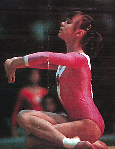

Galina Ionas (USSR)
1979 Chunichi Cup AA Bronze Medalist

Galina was born in 1965. After she finished high school, she studied at the Lesgaft Institute of Physical Culture in Leningrad and returned to Tallinn after graduating. She took up aerobics and finished 4th at the 2005 Free Fitness Championships of Estonia. As of 2011, she worked as an aerobics coach at Rocca la Mara in Tallinn.
Competition Results
1976
Estonian SSR Championships: 3rd V, 3rd UB, 3rd FX
Jr. USSR Cup (Candidate for Master of Sport): 3rd AA
1977
Estonian SSR Championships: 1st AA, 1st B, 1st FX, 2nd V, 2nd UB
Japan Jr. Invitational: 3rd AA, 1st FX
Jr. Friendship Tournament (Druzhba): 1st Team, 23rd AA
Jr. USSR Championships (Candidate for Master of Sport): 1st AA
Jr. USSR Cup (Candidate for Master of Sport): 2nd AA, 3rd FX
Jr. USSR-GDR Dual Meet: 1st Team, 7th AA
Russian Youth Championships (Candidate for Master of Sport): 2nd AA
1978
Estonian SSR Championships: 1st AA, 1st V, 1st B, 1st FX
International Championships of Romania: 4th FX, 6th B
Jr. ROM-USSR Dual Meet: 1st Team, 8th AA
Jr. USSR Championships: 2nd AA, 3rd B, 3rd FX
Jr. USSR Cup: 2nd AA, 2nd B, 4th FX
1979
Chunichi Cup: 3rd AA
Estonian SSR Championships: 1st AA, 1st V, 1st UB, 1st B, 1st FX
Jr. Friendship Tournament (Druzhba): 1st Team, 2nd AA, 1st UB, 1st B
Jr. GDR-USSR Dual Meet: 1st Team, 1st AA
Jr. USSR Championships: 2nd Team, 2nd AA, 3rd B, 3rd FX
Riga International: 5th AA
USSR Cup: 5th AA
1980
American Cup: 12th AA (prelims)
Antibes International: 4th AA, 2nd V, 2nd B
Intl. Mixed Pairs: 5th Team
Jr. European Championships: 2nd AA, 2nd UB, 2nd B, 3rd V, 5th FX
Orleans International: 2nd AA
USSR Championships: 8th AA, 3rd B, 5th FX, 8th UB
USSR Cup: 7th AA
This page was created on September
28, 2002 and was last updated on July 14, 2014.
© Gymn Forum